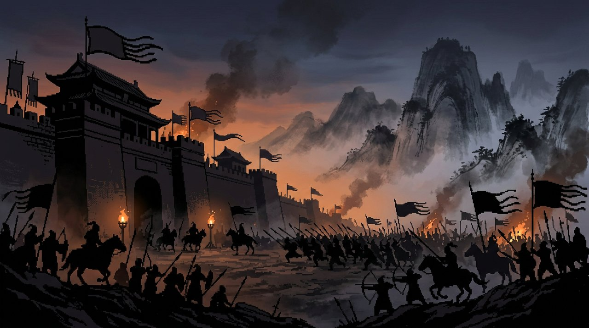

1
新遊戲開局 (New Game)
2
遊戲規則與介面說明 (Help)
【遊戲機制與介面規則簡介】
同等條件：
玩家與 AI 條件完全相同，受戰爭迷霧（Fog of War）限制，僅能觀察我方領地及鄰接前線城池情報。
精力有限（關注名單）：
每回合君主至多關注 6 名焦點武將（cast），其餘武將由規則 AI 代管。長久未關注（neglect ≥ 4）或忠誠偏低易生變故。
同城預算：
同城內政與徵兵共享該城金庫，多道軍令可能發生預算排擠，請注意「剩餘金錢」預估。
快捷鍵操作：
主畫面可使用鍵盤數字鍵 1～8 及 0 直接切換情報面板與執行軍令。
【新遊戲劇本與執政勢力設定】
戰局情勢劇本 (Scenario)：
標準均勢 (default) — 三國各領三城，兵馬齊備
劉備優勢 (advantage) — 漢室軍勢充沛，周邊敵軍疲憊
玩家親掌勢力 (Player Faction)：
[蜀] 劉備 — 洛陽、宛城、漢中 (推薦)
[魏] 曹操 — 許昌、陳留、襄陽
[吳] 孫權 — 建業、吳郡、會稽
對手諸侯 AI 後端模式：
rule（離線標準）
demo（示範 LLM，離線）
qwen（本機 Qwen，需伺服器端已啟動）
需要伺服器端設定；回合結算可能需數十秒
gemini（雲端，耗用伺服器端額度）
需要伺服器端設定；回合結算可能需數十秒
0
取消返回
1
起兵入世，推演天下
🗺️ 全境疆域圖
(點擊城池節點可選中並查閱情報)
劉備軍
第 0 回合
● 等待軍令輸入
城池:
3
座
兵力:
2500
國庫:
2100
金
儲糧:
2100
石
各勢力正在決策…
已等待
0
秒
各方諸侯調兵遣將中；若啟用 LLM 對手推演可能需 40–75 秒
1
城池情報
2
武將列表
3
派遣軍令
4
攻城估算
5
關注名單
6
奏摺起草
7
提交計畫
8
重新整理
0
主選單